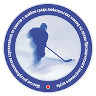

Республиканские соревнования по хоккею с шайбой среди любительских команд на призы Президентского спортивного клуба — одни из самых значимых соревнований среди любителей спорта в Республике Беларусь.
Высокий статус и уровень турнира объясняется не только личным участием в нем Главы государства. Охват всех регионов страны, представительные составы команд и достаточно высокий для любителей уровень мастерства привлекают все больше и больше болельщиков на трибуны, а это значит, что популярность хоккея и здорового образа жизни в стране растет.